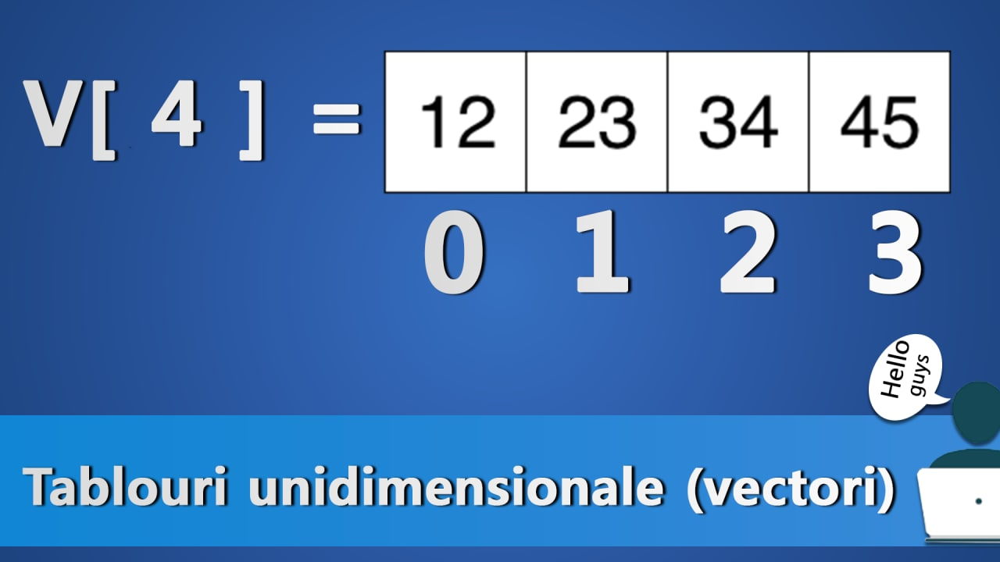

Vectorii sau tablourile unidimensionale sunt structuri de date bine definite si
organizate
in memorie. Cu
ajutorul acestora, se pot păstra in memorie si accesa ulterior mai multe variabile, fără
a
fi nevoie de reținerea explicită a fiecăreia dintre ele. Cu alte cuinte, un vector
reţine
sub același nume mai multe valori
de același tip. Fiecare valoare poate fi accesata folosind poziția sa în vector
(pozițiile
sunt numere naturale cuprinse intre 0 si dimensiunea maximă a vectorului)

TEORIE MATRICI
Matricele reprezintă o structură de date standard, folosită pentru a stoca o colecție de
date de același tip, organizate pe linii și coloane. Practic, o matrice este extinderea
la două dimensiuni a unui vector, de unde și numele alternativ de tablou bidimensional.
De asemenea, matricele pot fi privite drept vectori cu elemente de tip vector.